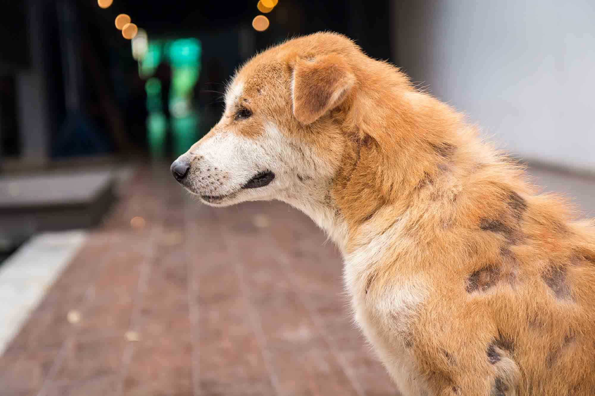
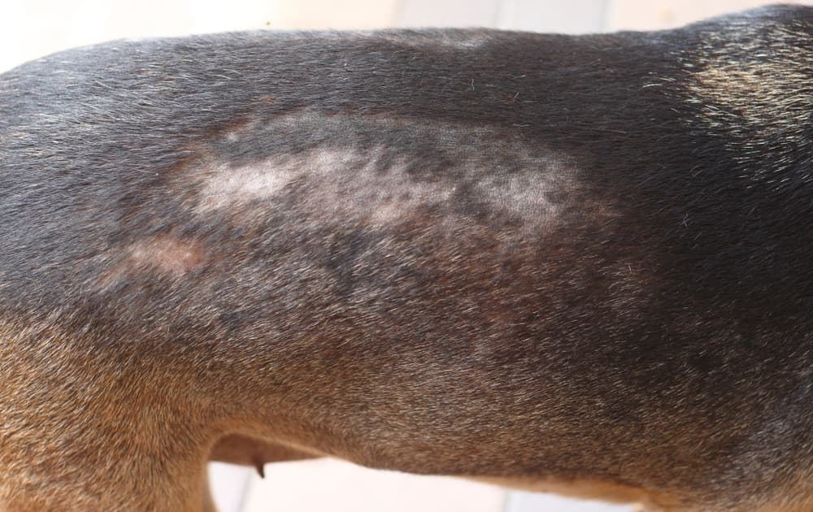

This project is to help achieve early detection of a disease called mange, also known as demodicosis or red mange. Mange is a skin disease caused by parastic mites, it can happens on domestic mammals, livestock, and wild mamals. Animals suffer from mange will have poor condition of skin and fur due to the infection.
 It doesn't matter how much you know about the disease, you can always use our IOS app to upload picture of what you think is animal suffering from mange
Many emerging diseases, such as COVID-19, Ebola and the avian flu, have origins in wildlife. We, as educated scholars, need to dive into the reasons behind and come up with effective strategies to handle situations, especially when the emerging disease is zoonotic, like COVID-19.
There are many causes that we are facing the challenges of zoonotic diseases, and according to Faunalytics, “One of the biggest reasons that we face these threats is because of our encroachment into wild spaces. Deforestation to make way for grazing land has displaced many wild species, and brought unknown numbers of viruses in closer contact with people like never before.”
As human beings invade nature, we also capture and kill wildlife animals and then bring them back into human areas for different purposes such as consumption, companions, trophies (Faunalytics, 4). Such activities are extremely dangerous as the risk of disease uncertainty remains unknown -- as COVID-19 can be a perfect example for illustration.
Prevention, detection and control of these potential emerging diseases become paramount. According to Robert G. McLean from the University of Nebraska, “Theoretically, the most effective prevention and control methods are obviously to prevent the introduction or emergence of wildlife diseases of public health or animal health importance rather than attempting to control them after they have become a problem. Prevention of introduction is a daunting task because of the many sources and routes of introduction into the United States, and early detection is one of the keys to prevention and rapid control or containment.”
Even though the monitoring process can be expensive and time consuming, it is still crucial to monitor and track wildlife diseases. And as McLean suggested that early detection is one of the keys to prevention, citizen science brings an opportunity for this. With the use of knowledge in the Computer Science field, the previous group who started this project from scratch focused on the development of an mobile application freely available to the public to track infectious diseases in wildlife, and our task is to develop a better version by updating and finalizing based on previous work.
if you have any question or encounter any problems, please contact Dr. Luis E. Escobar at apptrackwildlifediseases@gmail.com or escobar1@vt.edu